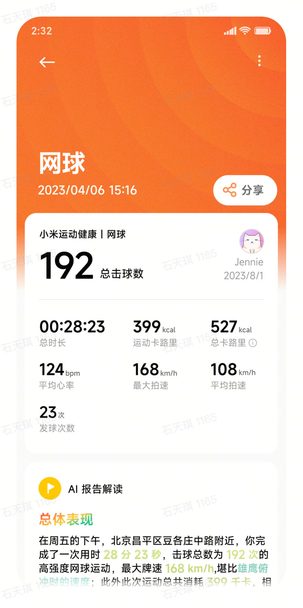

✦ 分享
分享样式选择
✕
🖼
水印海报
▶
轨迹视频
📊
运动报告
←
轨迹视频
分享
该视频展示仅作为运镜展示非最终实际视频效果
发球速度
0
MAX
km/h
🐱
Jennie
2023/8/1
小米运动健康
123
公里/小时
慢速
快速
运镜选择
数据展示
图表展示
数据信息
✕
分享到
💬
微信
⭕
朋友圈
▶
视频号
💾
保存
编辑记录将不会保存
已编辑的内容将不会保存，下次进入需要重新编辑。是否退出？
取消
确认退出